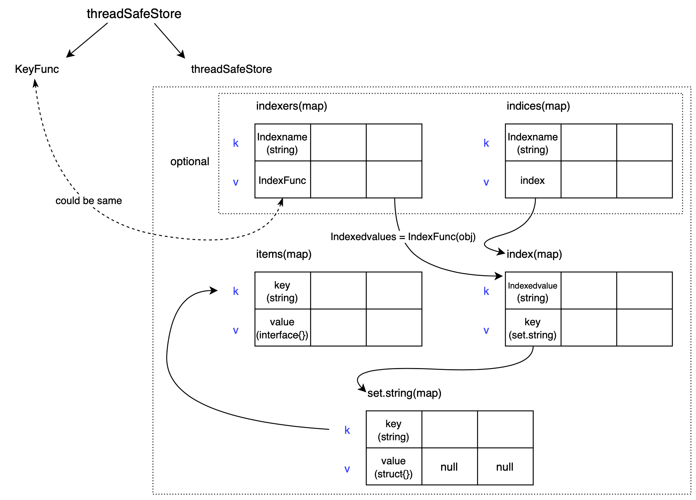
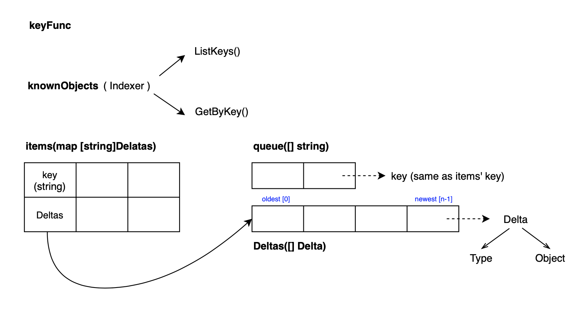
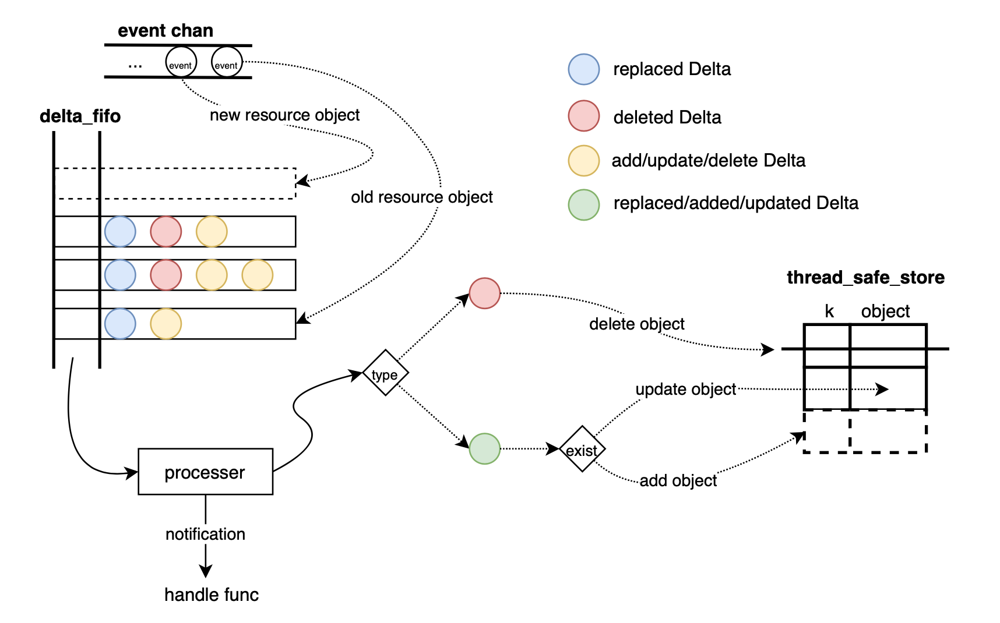

本文重点关注于K8S Informer的意义和原理，同时分析了Informer的架构与内部逻辑。
从K8S设计理念说起，为什么需要Informer
关于K8S的设计理念，耳熟能详的概念有很多，比如
- 声明式API
- 最终一致性
- 水平触发
- 资源对象
- …
与此相对的，是边缘触发的、基于命令式API的设计模式
这里提到的水平触发、边缘触发是电子里关于电信号的概念。它的具体理念可以阅读这篇文章，讲解的非常清晰：https://blog.csdn.net/dfsgwe1231/article/details/105993403
其实在我看来，这些概念都有紧密的相关性，对K8S的设计理念是一脉相承的。如果用一句话来表达我对K8S设计理念的理解，应该是：
Kubernetes 以声明式API这种请求形式、凭借控制器模式这种方法、达到了所控制的对象期待状态与真实状态最终一致的目的。整个过程体现了水平触发的思想。
用直白的语言来讲就是，“我得知道你期待是什么样的，我好对比你现在的样子，然后再做出进一步的动作。最终把你变成你应该成为的样子，具体怎么做你就别管了。”这里“我”就是是控制器，“你”就是API对象（资源对象）。而边缘触发其实就是，“我得知道你现在让我干什么，我知道了马上去干，你说什么我干什么。”
说些题外话，这样对比两种设计模式我们可以很直观感受到，K8S的设计模式中在事件通知后，动作执行前这段过程里留出了很多的“空间”。这些空间可以是：
容错空间
即使之前某次事件通知失败，由于我关注的是最终一致性，我依然可以根据对象最新的状态去做相应的操作。
拓展空间
只要能拿到不同对象的状态，我就可以根据这些信息做更多更加复杂、灵活的操作。而不是针对事件结果堆叠调用链，导致组件设计困难或考虑不周的概率增加。
话说回来，Informer 在这套设计理念中起到了什么作用呢？那就是，通知“我”（控制器） “你”（API对象）的期望状态是什么样的。Informer 把资源对象的期待的样子告知给控制器，控制器根据对象当前状态对比期望状态后作出相应操作。
现在问题又来了，Informer是怎么知道资源对象期望状态呢？这里涉及到一个K8S中很重要的机制——List & Watch。
简介List&Watch
首先抛开List&Watch机制，我们先回顾一下，解析到目前为止我们的需求是什么？——获取资源状态。
获取资源状态的最直接简单的方式就是向APIserver发送请求，返回当前的资源对象。然而这种方式极大的增加了APIserver的负载压力，请求的及时性并不能保证。但是，List&Watch可以避免这个问题。
List&Watch实际上是两个方法——list func 和 watch func。list很容易理解，就是上述请求一次返回一次状态的方法。而watch func是客户端向APIserver建立一次http长连接请求，服务端返回一个header带有“Transfer-Encoding”:“chunked”的http response。每当服务端数据有变化，会把该对象发送给客户端，然后客户端将其以事件这种数据结构为载体送进K8S系统中来。
1 | // 事件的数据结构 |
现在问题又来了，Informer知道资源状态，是如何把它告知给控制器的呢？下面通过描绘系统数据流的形式来详细讲述Informer的内部结构与实现逻辑。
详述Informer
Informer 内部都有什么？
下图是Informer结构的示意图，从图中可以看到各个组件的关系。Informer最基础的三个组件是ListerWatcher、Delta_fifo、Indexer。

其中，ListerWatcher如前文提到的，拥有 list 和 watch 两个func，用来获取事件（Event），得到的Event将被Reflector处理，处理得到的结果将以Delta的形式进入到Delta_fifo中。Delta_fifo是一个队列，它由Controller控制（注意：这里的Controller与前文提到的K8S控制器模式中的控制器并不相同）。Delta从队列中pop出后将会被processer处理，处理包括两方面：1.对象的变更同步到Indexer中，Indexer是一个用来存储资源对象并自带索引功能的本地存储；2.调用回调函数执行Add、Update、Delete这些Informer用户自定义的操作，这样Informer的使用者———也就是控制器可以通过回调函数去调协达到最终一致性。以上介绍了Informer中各个组件的关系，下图是一个抽象的关系示意图可以帮助理解。红线表明了数据的流向。

接下来，我们重点了解Informer内部的Indexer与Delta_fifo的运转机制。之后再去熟悉Informer的运行流程和逻辑就会轻松很多。
Indexer
在K8S中，所有的数据结构都是实现的接口（interface{}），Indexer就是一种接口，而在Informer中，实现Indexer接口的struct就是threadSafeStore。我们从两个方面——成员及方法来认识这个struct。
- 数据结构
threadSafeStore包含两个部分，一个是KeyFunc，另一个是threadSafeMap。Keyfunc是通过object得到Key的方法，由使用者自定义完成，也可以使用默认的Keyfunc，默认的KeyFunc将对象的{namespace}/{name}作为Key，Informer就是使用的默认KeyFunc。而从下图中可以看出threadSafeMap是由5个相互关联的map组成的。其中，

items是存储对象的map，每一个键对应着一个对象。它也是threadSafeMap最主要的数据结构。IndexFunc同KeyFunc一样也是开放的接口函数。使用者通过对object进行自定义的计算而得到Indexedvalue列表。indexers这个map将indexname与indexFunc绑定起来，这样一来直接通过indexname就可以得到相应的IndexFunc。这里的indexname是由Indexer使用者指定的索引名字，起到一个代表性的作用，通过这个索引名字，以及indices map，我们可以得到index表。indexmap，通过indexvalue得到key set，也就是满足IndexFunc筛选后的所有key。set.string类型的key set是一个string集合，没有重复的元素，它底层是使用值为空的map实现的。
- 方法
在介绍成员变量的过程中，访问threadSafeStore的内部逻辑越加清晰，根据Indexname与IndexedValue两个输入终可得到object。在这里，我以Add为例，重点讲述建立索引的过程。Update、Delete大同小异。
- 输入：object（资源对象）
- 返回：无
- 内部逻辑：
- 通过keyFunc计算得到key，在这里输入object的key即为{namespace}/{name}
- 通过items map获取已经缓存的旧object
- 更新items，将key对应到新的object
- 如果旧object不为空，则从Indices中删除旧的object
- 遍历indexers map，通过indexFunc得到indexValues
- 遍历indexValues，通过index map拿到set，删除set中的key
- 如果发现set没有元素了，从index map中删除这个indexValue。
- 遍历indexers map，通过indexFunc得到indexValues
- 通过indices map，拿到index。如果index为空，新建index，并将indexname与之绑定。
- 遍历indexValues，通过index map拿到set，如果set为空新建set，并将indexValue与set绑定，不为空直接插入key。
整个过程也不难理解，实际上就是访问的逆过程。详细的代码如下所示：
1 | // k8s.io/client-go/tools/cache/thread_safe_store.go |
Delta_fifo
对于Delta_fifo，我们知道它是一个先进先出的队列，队列中具体的元素是Delta。现在我们利用解析Indexer同样的方法来解析Delta_fifo。
- 数据结构
如同我前文所说，K8S中运用了大量的接口，实际上，Delta_fifo与threadSafeStore本质上都是实现了Store这个接口。Delta_fifo的结构相对简单些，它结构的示意图如下。其中，

在队列中核心数据是Delta。
Delta包含两部分，一个是类型，另一个是对象（object）。Delta的类型包括：1
2
3
4
5
6
7
8
9
10
11
12
13
14const (
Added DeltaType = "Added"
Updated DeltaType = "Updated"
Deleted DeltaType = "Deleted"
// Replaced is emitted when we encountered watch errors and had to do a
// relist. We don't know if the replaced object has changed.
//
// NOTE: Previous versions of DeltaFIFO would use Sync for Replace events
// as well. Hence, Replaced is only emitted when the option
// EmitDeltaTypeReplaced is true.
Replaced DeltaType = "Replaced"
// Sync is for synthetic events during a periodic resync.
Sync DeltaType = "Sync"
)Delta存放在一个数组里面，名为
Deltas。一个Deltas对应一个资源对象，Deltas中的每个Delta蕴含着Event的动作，所以Deltas记录着这个资源对象一系列的变化。最新的对象在数组末尾，最旧的则是数组的第一个元素。items是一个map，其中的每个key对应着一个Deltas队列。Queue是一个包含了所有key的数组。KeyFunc与Indexer提到的KeyFunc一样，默认也是{namespace}/{name}的形式。Delta_fifo还包含着一个成员叫
knownObjects，Delta_fifo可以通过调用它的ListKeys()方法得到底层存储的所有Key，通过GetByKey()得到对应key的对象。在Informer中，这里的底层存储就是Indexer。
- 方法
Delta_fifo比较重要的方法有以下几个
Add\Update\Delete
- 这几个放在一起是因为他们逻辑相似，大同小异。
- 作用：向Delta_fifo加入一个Added\Updated\Deleted Delta。
- 输入：object
- 返回：无
- Add\Update 除了加入的Delta动作类型不一致以外，加入内部逻辑是一样的。而Delete方法在把包含Deleted动作的Delta加入至fifo里之前会检查这个对象的key是否既不存在于indexer缓存，也不存在于队列里，如果是的话则返回错误。
- Add\Update\Delete都调用
queueActionLocked去执行加入Delta到队列的操作，下面重点介绍这个方法的逻辑。- 输入：DeltaType (Added\Updated\Deleted); object
- 输出：无
- 内部逻辑：
- 根据KeyFunc得到object的key
- 根据key通过items获取旧的Deltas，把新的Delta加到队列后面，形成新的Deltas
- 对Deltas进行去重操作
- 如果这个key的Deltas不存在，则queue数组增加一项新的key，加入末尾。
- 在items新添加新的一项key与新deltas的绑定
Replace
- 作用：在初始化Delta_fifo时使用。Informer会通过list得到某资源下全部的对象，而Replace方法就可以把这些资源对象一次性装载至队列，并同步至Indexer。
- 输入：object数组
- 返回：无
- 内部逻辑：
- 根据输入object数组的长度创建一个装载key的set keys（之前在Indexer部分提到的sets.string ）
- 遍历object数组，获取每个object的key，把key加入到keys这个集合中，同时利用之前提到的
queueActionLocked把对象加入Delta到队列，值得一提的是这个DeltaType为Replaced。 - 通过
knownObjects.ListKeys()得到所有本地缓存中所有key - 遍历这些key，判断刚才创建的keys集合中有没有本地缓存的key，没有的话从本地缓存中拿到key对应的object，再次利用queueActionLocked把它加入到Delta_fifio中，这里的DeltaType为
Deleted。意味着这个对象应该被删除。
Resync
- 作用：可以同步队列与本地存储
- 输入：无
- 输出：无
- 内部逻辑：
- 通过
knownObjects.ListKeys()得到所有Indexer本地缓存中所有key - 遍历这些key，先通过
knownObjects.GetByKey(key)得到object，然后调用queueActionLocked新增delta进队列，此时的动作为Sync
- 通过
Pop
- 作用：
- 输入：一个自定义的处理函数
ProcessFunc，pop时会把出队列的deltas用这个方法处理 - 输出：某一个deltas
- 内部逻辑：
死循环执行出队列操作，循环内逻辑如下：- 通过queue数组拿到最旧的（下标为0）key，queue指针下移一位
- 通过items map得到deltas，把它从items map中删除
- 用ProcessFunc处理这个Deltas
通过上述分析我们能看出来其实Delta_fifo并没有做具体地对资源对象做更新删除等操作，它更多是充当一个缓冲和转存的作用。资源对象的最新本地缓存是在Indexer中的，Indexer与etcd中存储的对象是保持状态一致的。
Informer 启动时都做了什么？
当Informer调用Run方法时，Informer启动，开始工作。Informer初始化的工作包括：
- 初始化delta_fifo，指定其knownObjects为某一indexer（或指定空indexer）
- 等待从delta_fifo队列pop，并等待用processer处理
- list，把list的结果用delta_fifo.replace方法放进delta_fifo
- list后进行watch，开始接收event
Informer 启动后数据是怎么流动的？
整个数据流我用一张图来表示，下面我来进行说明。

- 在执行watch之前，从图中可以看到，reflector会把list的结果以replaced 类型先装载进delta_fifo，然后会对比对象本地缓存，以加入deleted delta的形式清理不应存在的对象缓存。
- 执行watch后，event会被传送到event chan中，reflector可以从通道拿到event进行处理。将event转化为delta装载进delta_fifo。如果是新的资源对象，会新建deltas，如果是旧的资源，则会在已有的deltas后加入这个delta。
- 队列pop时是将deltas取出，循环遍历deltas，拿到delta依次进行处理。
- process会根据delta类型对本地对象缓存进行不同的操作。如果是deleted，则直接删除对应缓存；对于剩下的类型再判断delta中的对象是否存在于缓存中，若不存在就添加个新的对象，若存在则更新对应的对象。
本文介绍了Informer存在的意义与其内部机制。对与Informer紧密相关的List&Watch、K8S控制器机制没有进行详细的解释说明。对于这些部分，期待在未来作出分享。